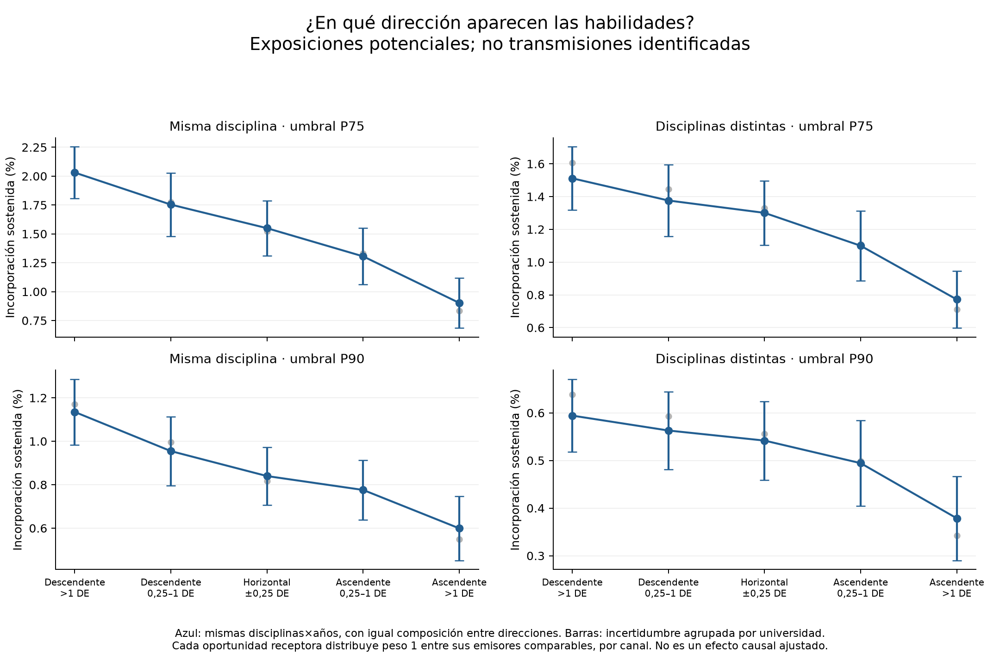

Secuencias de aparición sostenida
Selecciona una habilidad. La posición de cada universidad queda fijada en el primer año sostenido del emisor focal.
Las líneas posibles no identifican transmisiones. Se incluyen únicamente receptores con entrada sostenida posterior y un emisor focal que conservaba presencia alta antes de esa entrada. Otros programas pueden haber sido emisores. Pasa el cursor sobre los puntos para ver institución, disciplina y año.
Dirección y oportunidades de incorporación

Las tasas distribuyen cada oportunidad receptora entre emisores comparables; se estandarizan por disciplina y año. No sustituyen los modelos ajustados ni son probabilidades de transmisión de una díada.